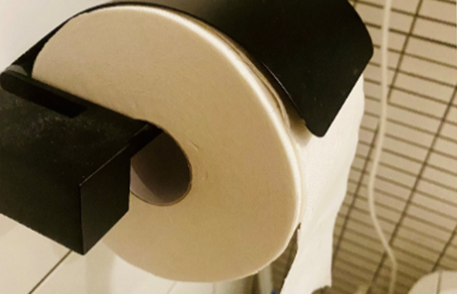
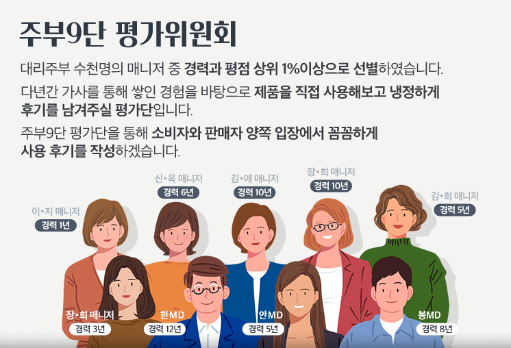

예민한 피부에도 무해한
친환경 우유 빛깔 휴지
우유팩을 모아서 휴지로 만드는 코주부!
인체에 해롭지 않은 착한 성분과 고급 티슈만큼
부드러운 사용감이 일품이에요.
REAL REVIEW
장*희 매니저(경력 3년)
본 제품의 리얼 리뷰는 직접 제품을 사용한 후
솔직하고 꼼꼼하게 작성하였습니다.

카스텔라처럼 푹신한 엠보싱
코주부 휴지는 폭신폭신한 엠보싱이 장점! 3겹으로
층층이 쌓아 올려 쉽게 찢기지 않아요. 도톰한 느낌의
휴지를 원한다면 딱 이에요.

길이가 길~어서 오래 써요.
휴지 가격이 왜 이렇게 비싸? 하지만 써보면 알아요~!
다른 휴지에 비해 40m 가 감겨 있어서 길어요! 훨씬
오래 사용하니 경제적이에요.
비데겸용으로 실용적이에요.
우유갑으로 만들었지만 부드럽고, 흡수력이 좋아서
여기저기 사용하기 좋아요. 특히 물에 잘 풀리도록
만들어져서 비데겸용으로도 사용할 수 있어요!
먼지날림이 적어요.
타사 휴지에 비해 먼지날림이 적어요. 실제로 휴지를
짖을 때, 사진을 비교해 보면 확실히 먼지가 덜 날려서
위생적이에요.
4無 인체에 무해한 휴지
우유갑을 재생해서 만든 코주부! 피부염증을 유발할 수
있는 형광증백제도와 유해한 성분들이 없어서 아이가
쓰기에도 안심! 피부가 예민한 모두에게 추천하고
싶어요.
업체에서 전하고 싶은 이야기

12분의 1그루 3겹휴지
나무대신 우유갑! 12팩을 쓰면 나무 한그루를 살리는셈.
그래서 12분의 1그루입니다.

지구를 살려주세요.
인도네시아아 원시림의 72% 아마존 원시림의 15%는
이미 사라졌고, 콩고의 원시림마저 사라질 위험에 처해
있습니다.

4無 첨가! 키친타올처럼 깐깐한 유해성분 검사완료

그래서 코주부입니다.
부림제지는 우리나라에서 우유갑 되살림 휴지를 가장
먼저 만들어온 생산자 중 하나입니다.
생산자 책임활용제도 (EPR)에 우유갑을 포함시키는데
기여하여 대통령상을 받기도 했습니다.
인체와 지구에 무해한 코주부! 기억해주세요.
DR.JUVU’s CHCK POINT
- 세글자
우유갑을 재활용하여 휴지로 만들었어요.
- 두글
도톰하고 짱짱한 재질로 흡수력이 좋아요.
- 경
몸에 안 좋은 유해성분은 첨가하지 않았어요.
- 사용성
일반 제품보다 펄프가 더 들어 있고, 길어서 오래 사용해요.
WHY DR.JUVU?
닥터주부는 공급자와 고객, 모두의 입장에서 깐깐하게 살펴봅니다.
지구와 사람 모두에게 깨끗한 행복을 전하기 위해 노력합니다.
DR.JUVU의 REAL REVIEW를 책임지는
주부9단 평가위원회는?

규격 및 스펙
| 색상 | 흰색/미색 |
|---|---|
| 치수 | 98(+/-3)mm x 40m (18롤, 3겹) |
| 소재 |
종이재(우유갑 재활용펄트), 합치풀 (생산과정에서 일반고지, 컵지, 천연펄프등이 일부 함유될 수 있음) |
| 생산자 |
부림제지㈜ 경기도 이천시 백사면 이여로 253번길 33-65 전. 02-2299-2771 |